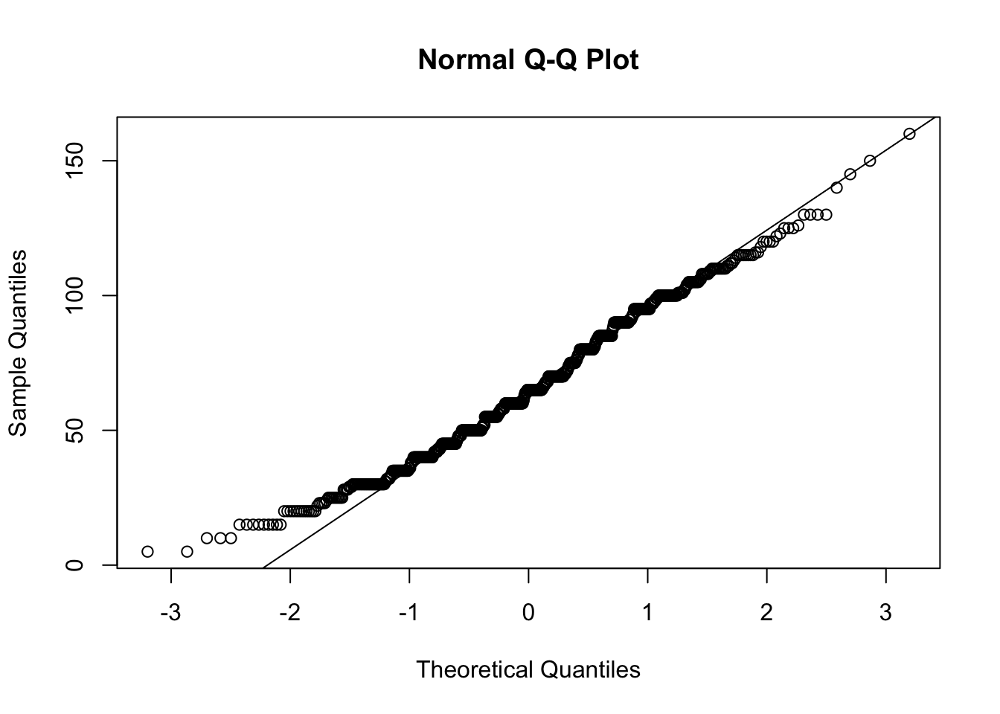

Capítulo 24 Teste de Normalidade
Antes de aplicar muitos testes estatísticos, é importante verificar se os dados seguem uma distribuição normal (ou “distribuição gaussiana”). Essa etapa é fundamental porque vários testes paramétricos (como o teste t de Student e a ANOVA) assumem a normalidade dos dados. Quando essa condição não é atendida, a escolha do teste estatístico pode mudar para opções não paramétricas.
24.1 Hipóteses nos Testes de Normalidade
Os testes de normalidade propriamente ditos avaliam as seguintes hipóteses:
- Hipótese Nula (H₀): Os dados seguem uma distribuição normal.
- Hipótese Alternativa (H₁): Os dados não seguem uma distribuição normal.
⚠️ Existem também testes que examinam apenas um aspecto da normalidade, como a assimetria ou a curtose isoladamente. Neles a hipótese nula é outra (por exemplo, “a assimetria é igual a zero”), e um resultado não significativo não garante normalidade. Veremos um caso desses adiante.
Se o valor de p for menor que 0,05: Rejeitamos a hipótese nula.
Se o valor de p for maior ou igual a 0,05: Não rejeitamos a hipótese nula.
24.2 Principais Testes de Normalidade
Abaixo estão os testes de normalidade mais conhecidos, quando são mais recomendados e os pacotes em R:
| Teste | Quando Usar | Pacote no R |
|---|---|---|
| Shapiro-Wilk | Amostras pequenas e médias (n < 50 até ~ 2000) | stats |
| Kolmogorov-Smirnov (K-S) | Amostras maiores; pode comparar duas distribuições, mas menos potente para normalidade | stats |
| Lilliefors | Versão do K-S ajustado para média e desvio amostrais | nortest |
| Anderson-Darling | Mais sensível nas caudas da distribuição; recomendado para médias e grandes amostras | nortest |
| Jarque-Bera | Teste baseado em assimetria (skewness) e curtose (kurtosis); comum em econometria | tseries |
| D’Agostino (assimetria) | Testa apenas se a assimetria difere de zero — não é um teste de normalidade completo | moments |
| Anscombe-Glynn (curtose) | Testa apenas se a curtose difere da esperada na Normal | moments |
24.2.1 Dicas de Uso
- Para amostras pequenas (n < 50): prefira o Shapiro-Wilk (função
shapiro.test()do pacote basestats). - Para amostras médias a grandes: considere Anderson-Darling (
ad.test()do pacotenortest). - Para investigar por que os dados fogem da normalidade, use
agostino.test()(assimetria) eanscombe.test()(curtose), ambos do pacotemoments. Atenção: cada um testa um aspecto isolado, não a normalidade como um todo. - O Kolmogorov-Smirnov (
ks.test()) é mais geral, mas menos recomendado quando a média e desvio padrão são estimados dos próprios dados. - O Lilliefors (
lillie.test()do pacotenortest) é uma boa alternativa ao K-S para dados amostrais. - Para análises em econometria ou séries temporais, o Jarque-Bera (
jarque.bera.test()do pacotetseries) é bastante utilizado.
24.2.2 Exemplo Prático em R
#install.packages("nortest")
#install.packages("moments")
# Importe o banco de dados Pokemon
library(readr)
Pokemon <- read_csv("Pokemon.csv")
# Veja o QQ
qqnorm(Pokemon$Speed)
qqline(Pokemon$Speed)
##
## Shapiro-Wilk normality test
##
## data: Pokemon$Speed
## W = 0.98574, p-value = 1.757e-06##
## Anderson-Darling normality test
##
## data: Pokemon$Speed
## A = 3.0665, p-value = 1.064e-07##
## Lilliefors (Kolmogorov-Smirnov) normality test
##
## data: Pokemon$Speed
## D = 0.06446, p-value = 1.662e-07# D'Agostino: testa APENAS a assimetria (H0: assimetria = 0)
library(moments)
agostino.test(Pokemon$Speed)##
## D'Agostino skewness test
##
## data: Pokemon$Speed
## skew = 0.27799, z = 3.02335, p-value = 0.0025
## alternative hypothesis: data have a skewness##
## Anscombe-Glynn kurtosis test
##
## data: Pokemon$Speed
## kurt = 2.5486, z = -3.1154, p-value = 0.001837
## alternative hypothesis: kurtosis is not equal to 3📌 Repare na saída dos dois últimos testes: o R imprime “D’Agostino skewness test” e “Anscombe-Glynn kurtosis test”. Eles respondem a perguntas específicas — a distribuição é assimétrica? é mais pontuda ou mais achatada que a Normal? — e complementam os testes de normalidade, mas não os substituem.
Resumo
- Sempre comece analisando a normalidade dos seus dados.
- Escolha o teste de acordo com o tamanho da amostra e o objetivo da análise.
- Use gráficos (histograma, boxplot e principalmente o QQ) junto com testes estatísticos para uma análise mais completa.
Importante: Testes de normalidade são sensíveis ao tamanho da amostra. Em amostras muito grandes, pequenos desvios podem resultar em p-valores baixos; em amostras pequenas, a potência dos testes é baixa.
24.3 Assimetria e Curtose: O que são e por que são importantes?
Quando analisamos dados, é importante entender não só a média e o desvio padrão, mas também o formato da distribuição dos valores. Duas medidas ajudam muito nisso: assimetria e curtose. Vamos entender cada uma de forma simples:
24.3.1 O que é Assimetria (Skewness)?
A assimetria mostra se os dados estão “puxados” para algum lado, ou seja, se a distribuição tem uma cauda maior para a direita ou para a esquerda.
- Assimetria zero: Os dados estão distribuídos de forma equilibrada ao redor da média (exemplo: distribuição normal perfeita).
- Assimetria positiva (à direita): A cauda é mais longa à direita, ou seja, há mais valores extremos acima da média.
- Assimetria negativa (à esquerda): A cauda é mais longa à esquerda, há mais valores extremos abaixo da média.
Por que isso importa?
A distribuição Normal é um exemplo de distribuição simétrica.
24.3.2 O que é Curtose (Kurtosis)?
A curtose indica o quanto a distribuição é “pontuda” ou “achatada” em relação à Distribuição Normal.
- Curtose alta (leptocúrtica): Distribuição muito “pontuda”, com muitas observações próximas da média, mas também mais valores extremos (outliers).
- Curtose baixa (platicúrtica): Distribuição mais achatada, com menos valores extremos.
- Curtose média (mesocúrtica): Parecida com a distribuição normal.
Por que isso importa?
A presença de muita curtose (valores muito altos ou baixos) pode indicar que há mais outliers do que o esperado, o que também pode afetar os resultados de testes estatísticos.
- Assimetria: mostra se a distribuição “pende” para um lado.
- Curtose: mostra se a distribuição é “pontuda” e cheia de extremos, ou mais “achatada”.
Essas duas medidas ajudam a entender melhor o comportamento dos seus dados e garantem que você escolha os testes estatísticos mais adequados para a sua análise!